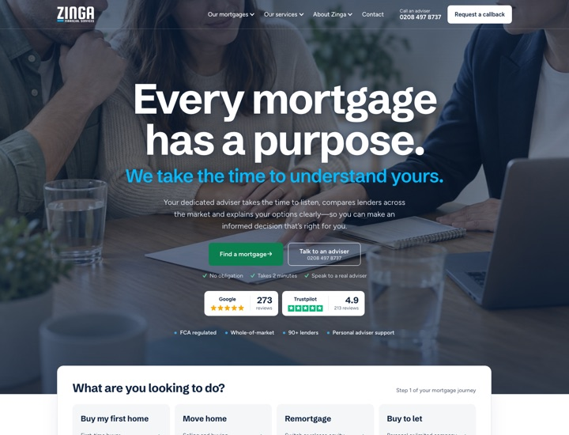
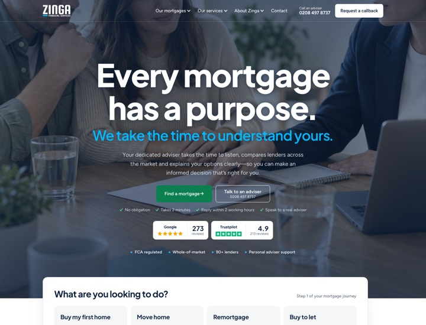
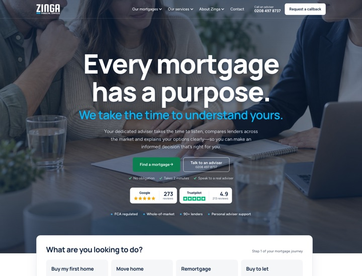
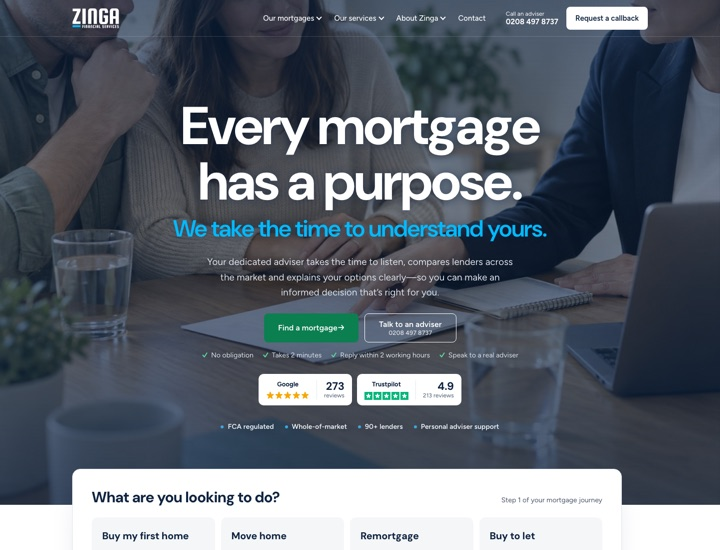
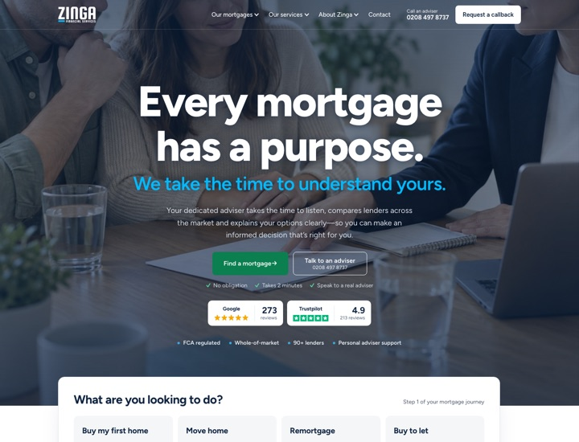
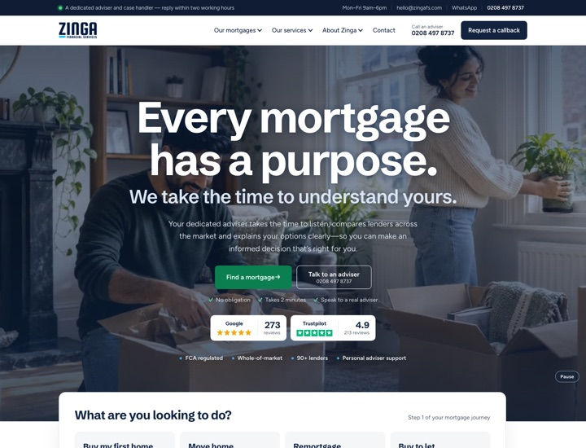
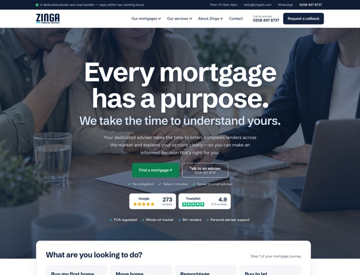
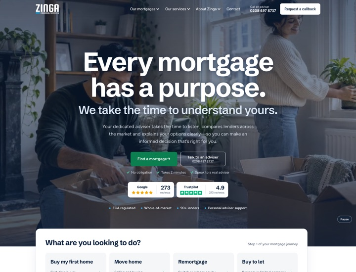
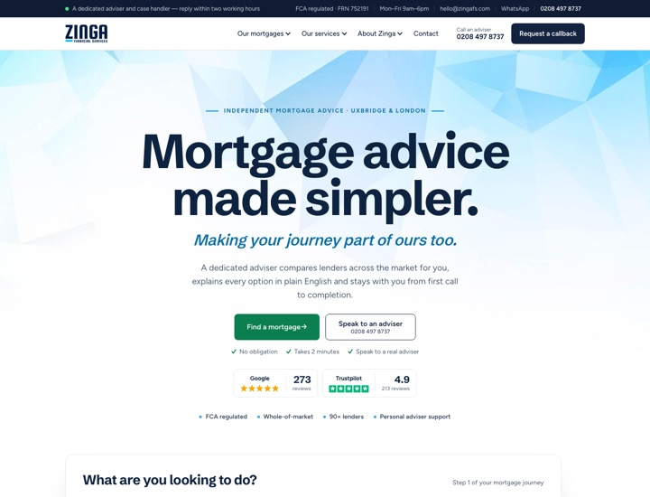
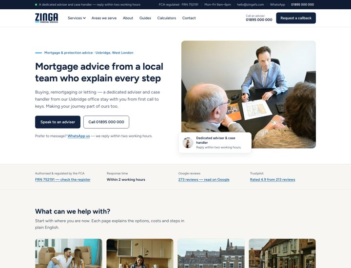

Website redesign
Option C with Plus Jakarta Sans
You chose option C, the photo behind the menu, and Plus Jakarta Sans for the headings (18 Oct). It's now the site's font everywhere, including the team page. The other fonts are kept below for reference. Both work on desktop and mobile; only the homepage is included, and the enquiry form doesn't send anything.
Option C in five heading fonts (2 chosen)
Your chosen design, as a full homepage in each font. Only the headings change; open each one on your phone too. Tell us the number you prefer.

1. Schibsted Grotesk
What the site uses today: tight and condensed.
View the full homepage →
2. Plus Jakarta Sans
Modern and confident, with open, rounded letters; popular with finance brands.
View the full homepage →
3. Manrope
Clean and geometric, slightly more technical in feel.
View the full homepage →
4. DM Sans
Simple, friendly and very readable at every size.
View the full homepage →
5. Figtree
The site's body font in bold, so headings and text match.
View the full homepage →Just the heading side by side? Compare the five fonts on one page →
Team page
Your team photos with name and job title only. No personal emails or phone numbers are shown: each person has an "Email" button that opens a short form, and the message comes to your admin inbox with that person's name on it. (In this preview the form doesn't send anything.)
Hero options
As discussed on 8 October, here is the simplified homepage with four choices for the top of the page: a looping video or a photo, each either below the menu or running up behind it. Each sits behind a dark overlay, and the rest of the page is the same in all four. On 12 October you chose option C; it now has a better photo crop on phones, and the motto line under the heading has been removed in all four. Both work on desktop and mobile. Only the homepage is included in this preview, and the enquiry form doesn't send anything.

Video background
A slow, silent loop of home and advice scenes plays behind the heading and motto. It pauses for visitors who prefer reduced motion and has a pause button. Our sample is made from the site's illustrative images; a filmed or licensed clip can replace it.
View option A →
Photo background
One full-width photo behind the message: lighter to load and calmer than a video. The photo can be changed at any time, ideally to a real photo of the Zinga team or office.
View option B →
Photo behind the menu
The same photo, but it runs right up behind the menu bar, which turns transparent with a white logo. There's no top bar, so the photo starts at the very top of the page. It switches back to the normal white menu as soon as you scroll or open a menu. Option D shows the same with the video.
View option C →
Video behind the menu
Option A's video, running right up behind the transparent menu bar with a white logo. Like option C, the menu turns white again as soon as you scroll or open a menu.
View option D →What changed since the call: the line above the heading and the FCA number in the top bar are removed; the repeated sections are gone (“Not just a comparison site”, “What can we help with?”, the three steps, advisers and protection — they now live on their own pages); About Zinga shows lenders, Google and Trustpilot, with the whole-of-market, dedicated adviser and end-to-end points underneath; and the calculators sit higher up. The hero now uses your wording: “Every mortgage has a purpose. We take the time to understand yours.” with the “Talk to an adviser” button.
Earlier versions
Kept for comparison.

New homepage (2 Oct)
Design option 1's layout and bold headings. Updated after your feedback: the hero now leads with the message and your motto, “Making your journey part of ours too.” It also has the step-by-step mortgage enquiry, lender logos, calculators, protection and local expertise.
View the new homepage →
Previous homepage
The earlier version shown as design 2 in our call, kept here for comparison.
View the previous homepage →